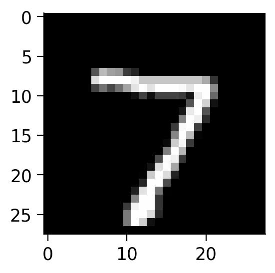
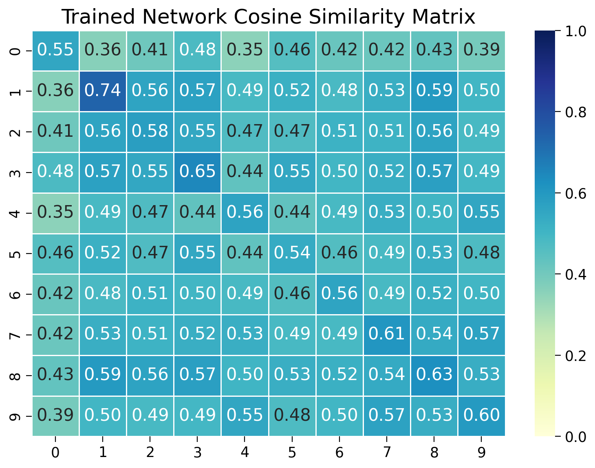
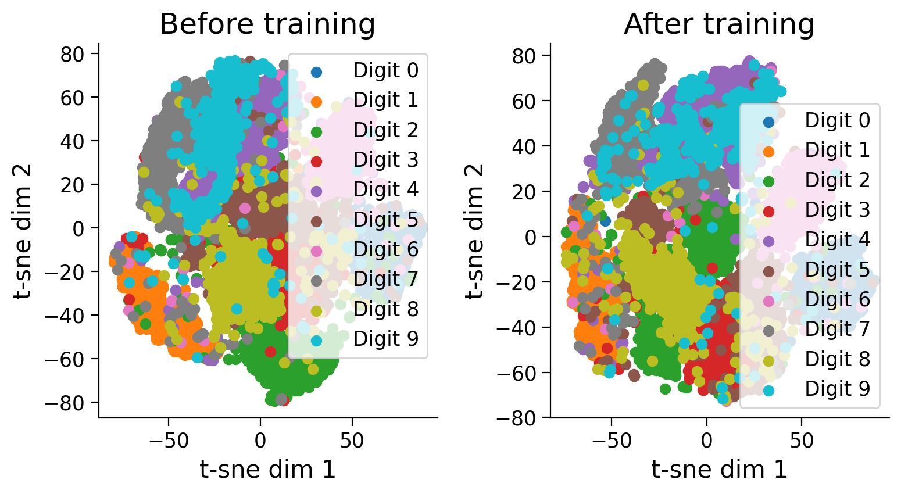
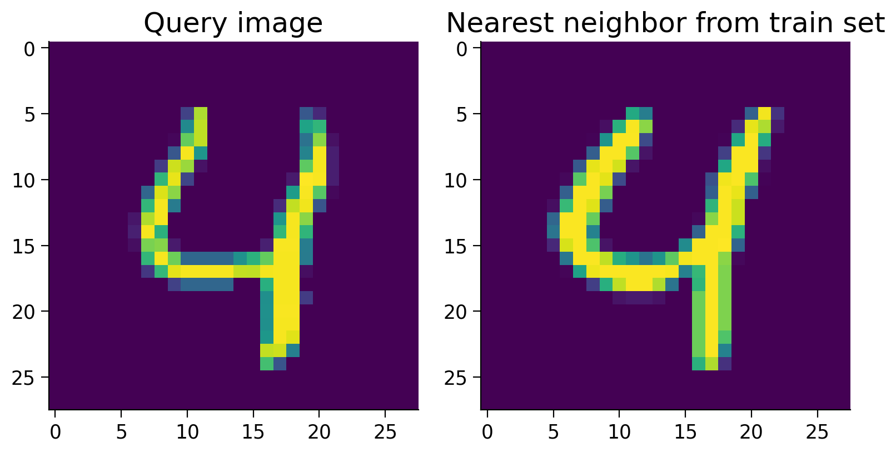

Tutorial 2: Contrastive learning for object recognition#
Week 1, Day 2: Comparing Tasks
By Neuromatch Academy
Content creators: Andrew F. Luo, Leila Wehbe
Content reviewers: Samuele Bolotta, Yizhou Chen, RyeongKyung Yoon, Ruiyi Zhang, Lily Chamakura, Patrick Mineault, Alex Murphy
Production editors: Konstantine Tsafatinos, Ella Batty, Spiros Chavlis, Samuele Bolotta, Hlib Solodzhuk, Patrick Mineault, Alex Murphy
Tutorial Objectives#
Estimated timing of tutorial: 40 minutes
By the end of this tutorial, participants will be able to:
Understand why we want to do contrastive learning.
Understand the losses used in contrastive learning.
Train a network using contrastive learning on MNIST.
If you want to download the slides: https://osf.io/download/x4y79/
<__main__._NoOpWidget at 0x7fe750bdd9f0>
Setup#
Install and import feedback gadget#
Install and import feedback gadget#
Show code cell source
# @title Install and import feedback gadget
!pip install vibecheck numpy matplotlib torch torchvision tqdm ipysankeywidget ipywidgets seaborn --quiet
from vibecheck import DatatopsContentReviewContainer
def content_review(notebook_section: str):
return DatatopsContentReviewContainer(
"", # No text prompt
notebook_section,
{
"url": "https://pmyvdlilci.execute-api.us-east-1.amazonaws.com/klab",
"name": "neuromatch_neuroai",
"user_key": "wb2cxze8",
},
).render()
feedback_prefix = "W1D2_T2"
Import dependencies#
Show code cell source
# @title Import dependencies
import logging
import gc
import contextlib
import io
# PyTorch and related libraries
import torch
import torch.nn as nn
import torch.nn.functional as F
from torch.utils.data import DataLoader
import torchvision
# Set up PyTorch backend configurations
torch.backends.cuda.matmul.allow_tf32 = True
torch.backends.cudnn.allow_tf32 = True
# Numpy for numerical operations
import numpy as np
# Matplotlib & Seaborn for plotting
import matplotlib.pyplot as plt
import seaborn as sns
# Scikit-learn for machine learning utilities
from sklearn.decomposition import PCA
from sklearn.manifold import TSNE
Figure settings#
Show code cell source
# @title Figure settings
logging.getLogger('matplotlib.font_manager').disabled = True
%matplotlib inline
%config InlineBackend.figure_format = 'retina' # perform high definition rendering for images and plots
plt.style.use("https://raw.githubusercontent.com/NeuromatchAcademy/course-content/main/nma.mplstyle")
Helper functions#
Show code cell source
# @title Helper functions
# This is code from the pytorch metric learning package
def neg_inf(dtype):
# Returns the smallest possible value for the given data type
return torch.finfo(dtype).min
def small_val(dtype):
# Returns the smallest positive value greater than zero for the given data type
return torch.finfo(dtype).tiny
def to_dtype(x, tensor=None, dtype=None):
# Converts tensor `x` to the specified `dtype`, or to the same dtype as `tensor`
if not torch.is_autocast_enabled():
dt = dtype if dtype is not None else tensor.dtype
if x.dtype != dt:
x = x.type(dt)
return x
def get_matches_and_diffs(labels, ref_labels=None):
# Returns tensors indicating matches and differences between pairs of labels
if ref_labels is None:
ref_labels = labels
labels1 = labels.unsqueeze(1) # Expand dimensions for comparison
labels2 = ref_labels.unsqueeze(0) # Expand dimensions for comparison
matches = (labels1 == labels2).byte() # Byte tensor of matches
diffs = matches ^ 1 # Byte tensor of differences (inverse of matches)
if ref_labels is labels:
matches.fill_diagonal_(0) # Remove self-matches
return matches, diffs
def get_all_pairs_indices(labels, ref_labels=None):
"""
Given a tensor of labels, this will return 4 tensors.
The first 2 tensors are the indices which form all positive pairs
The second 2 tensors are the indices which form all negative pairs
"""
matches, diffs = get_matches_and_diffs(labels, ref_labels)
a1_idx, p_idx = torch.where(matches) # Indices for positive pairs
a2_idx, n_idx = torch.where(diffs) # Indices for negative pairs
return a1_idx, p_idx, a2_idx, n_idx
def cos_sim(input_embeddings):
# Computes cosine similarity matrix for input embeddings
normed_embeddings = torch.nn.functional.normalize(input_embeddings, dim=-1) # Normalize embeddings
return normed_embeddings @ normed_embeddings.t() # Cosine similarity matrix
Section 1: Building the model#
Video#
Video available at https://youtube.com/watch?v=oGs-90Nzzw8
Video available at https://www.bilibili.com/video/BV1pb421H7Tz
<__main__._NoOpWidget at 0x7fe650e9c6d0>
Submit your feedback#
Show code cell source
# @title Submit your feedback
content_review(f"{feedback_prefix}_video")
<__main__._NoOpWidget at 0x7fe650e9d690>
What is contrastive learning?#
Contrastive learning is a form of self-supervised learning (SSL). Contrastive learning seeks to map inputs to a high-dimensional space, bringing similar examples closer together and pushing dissimilar examples farther apart.
It may not be immediately obvious why you want to engage in contrastive learning. Can’t we just use a large 1000-class ImageNet-trained classifier to recognize every image? Contrastive learning proves useful when the number of classes is not known ahead of time. For example, if you wanted a network to recognize human faces, there are approximately 8 billion people on the planet, making it impractical to train a classification network with 8 billion output neurons. Instead, you can train a network to output a high-dimensional embedding for each image. With this approach, given a reference image of a person, the network can determine if a new photo is similar to or different from the reference image.
In this section, we will:
Construct a model that maps images to a high-dimensional space.
Visualize the geometric properties of the embedding prior to model training.
Constructing the model#
We’ll now construct a fully connected artificial neural network for contrastive learning, built from residual blocks in the style of a ResNet. This will look much like a classification network, but without a classification head at the end. Instead, the network maps images to a high-dimensional space:
where \(f\) is the network, \(\mathbf{x}\) is an input image and \(\mathbf{z}\) is the embedding. \(\mathbf{z}\) is a vector with dimension out_dim, normalized to have a norm of 1 (unit norm). Later, we will train the network such that similar images have similar embeddings and dissimilar images have dissimilar embeddings.
Building the model from residual blocks#
We first define a residual block. This block contains a pre-normalization step and a leaky ReLU activation function to help with vanishing gradients, in addition to linear layers (fully connected layers with an identity function as the activation function). Residual networks tend to be easier to optimize than standard networks, because the residual connection allows for a passageway for gradients to flow down during backpropagation.
class ResidualBlock(nn.Module):
# Follows "Identity Mappings in Deep Residual Networks", uses LayerNorm instead of BatchNorm, and LeakyReLU instead of ReLU
def __init__(self, feat_in=128, feat_out=128, feat_hidden=256, use_norm=True):
super().__init__()
# Define the residual block with or without normalization
if use_norm:
self.block = nn.Sequential(
nn.LayerNorm(feat_in), # Layer normalization on input features
nn.LeakyReLU(negative_slope=0.1), # LeakyReLU activation
nn.Linear(feat_in, feat_hidden), # Linear layer transforming input to hidden features
nn.LayerNorm(feat_hidden), # Layer normalization on hidden features
nn.LeakyReLU(negative_slope=0.1), # LeakyReLU activation
nn.Linear(feat_hidden, feat_out) # Linear layer transforming hidden to output features
)
else:
self.block = nn.Sequential(
nn.LeakyReLU(negative_slope=0.1), # LeakyReLU activation
nn.Linear(feat_in, feat_hidden), # Linear layer transforming input to hidden features
nn.LeakyReLU(negative_slope=0.1), # LeakyReLU activation
nn.Linear(feat_hidden, feat_out) # Linear layer transforming hidden to output features
)
# Define the bypass connection
if feat_in != feat_out:
self.bypass = nn.Linear(feat_in, feat_out) # Linear layer to match dimensions if they differ
else:
self.bypass = nn.Identity() # Identity layer if input and output dimensions are the same
def forward(self, input_data):
# Forward pass: apply the block and add the bypass connection
return self.block(input_data) + self.bypass(input_data)
Now having defined our core ResidualBlock module, we build our network from a series of these residual blocks. We use PyTorch’s nn.Sequential module to chain the blocks together.
class Model(nn.Module):
def __init__(self, in_dim, out_dim, hidden_dim, num_blocks=4):
super().__init__()
# Initial linear projection from input dimension to hidden dimension
self.in_proj = nn.Linear(in_dim, hidden_dim)
# Sequence of residual blocks
self.hidden = nn.Sequential(
*[ResidualBlock(feat_in=hidden_dim, feat_out=hidden_dim, feat_hidden=hidden_dim) for i in range(num_blocks)]
)
# Output linear projection from hidden dimension to output dimension
self.out = nn.Linear(hidden_dim, out_dim)
def forward(self, x):
# Forward pass: input projection, passing through residual blocks, and final output projection
in_proj_out = self.in_proj(x)
hidden_out = self.hidden(in_proj_out)
embedding = self.out(hidden_out)
return F.normalize(embedding, p=2, dim=-1)
Notice that the output of the network is normalized using F.normalize so that each embedding has unit norm. Let’s now look at the geometry of images processed by an untrained network. We first load data from MNIST.
# Define the transformations for the MNIST dataset
mnist_transforms = torchvision.transforms.Compose([
torchvision.transforms.ToTensor(), # Convert images to tensor
torchvision.transforms.Normalize((0.1307,), (0.3081,)) # Normalize the images with mean and standard deviation
])
with contextlib.redirect_stdout(io.StringIO()):
# Load the MNIST test dataset with the defined transformations
test_dset = torchvision.datasets.MNIST("./", train=False, transform=mnist_transforms, download=True)
# Calculate the height and width of the MNIST images (28x28)
height = int(784**0.5)
width = height
# Select the first image from the test dataset
idx = 0
data_point = test_dset[idx]
# Display the image using matplotlib
plt.figure(figsize=(3, 3))
plt.imshow(data_point[0][0].numpy(), cmap='gray') # Display the image in grayscale
plt.show()
# Print the label of the selected image
print(data_point[1])

7
Now we will create the model using the definition we wrote previously and move it to the desired device.
# Initialize the model with specified input, output, and hidden dimensions
mynet = Model(in_dim=784, out_dim=128, hidden_dim=256)
# Automatically select the device (GPU if available, otherwise CPU)
device = torch.device("cuda" if torch.cuda.is_available() else "cpu")
# Output the device that will be used
print(f"Using device: {device}")
# Move the model to the selected device
_ = mynet.to(device)
Using device: cpu
The geometry of the untrained network#
Let’s visualize how close different examples are in the embedding space before training. We’ll first gather the embeddings from multiple images by passing them through the network.
# First try with untrained network, find the cosine similarities within a class and across classes
# Create a DataLoader for the test dataset with a batch size of 50
test_loader = DataLoader(test_dset, batch_size=50, shuffle=False) # enable persistent_workers=True if more than 1 worker to save CPU
# Set the model to evaluation mode
mynet.eval()
# Initialize lists to store test embeddings and labels
test_embeddings = []
test_labels = []
# Initialize a similarity matrix of size 10x10 for 10 classes
sim_matrix = np.zeros((10, 10))
# Disable gradient computation for inference
with torch.inference_mode():
for data_batch in test_loader:
test_img, test_label = data_batch # Get images and labels from the batch
batch_size = test_img.shape[0] # Get the batch size
flat = test_img.reshape(batch_size, -1).to(device, non_blocking=True) # Flatten the images and move to device
pred_embeddings = mynet(flat).cpu().numpy().tolist() # Get embeddings from the model and move to CPU
test_embeddings.extend(pred_embeddings) # Store the embeddings
test_labels.extend(test_label.numpy().tolist()) # Store the labels
# Convert embeddings and labels to numpy arrays
test_embeddings_untrained = np.array(test_embeddings)
# Convert test labels to numpy array
test_labels_untrained = np.array(test_labels)
Code exercise 1: Visualizing the cosine similarity of embeddings within and across classes before training#
In this exercise, we’ll measure the cosine similarity between embeddings of images from the same class and across different classes. We’ll visualize the cosine similarity matrix to see if the network has learned to distinguish between different classes. The cosine similarity between two embedding vectors \(\mathbf{z}_1\) and \(\mathbf{z}_2\) with norm 1 is defined as:
where \(\cdot\) denotes the dot product. The cosine similarity ranges from -1 to 1, where:
1 indicates the vectors are identical
0 indicates that the vectors are orthogonal
-1 indicates that the vectors are diametrically opposed.
# Dictionary to store normalized embeddings for each class
embeddings = {}
for i in range(10):
embeddings[i] = test_embeddings_untrained[test_labels_untrained == i]
############################################################
# Fill in this code to compute cosine similarity matrix within the class.
raise NotImplementedError("Student exercise: calculate cosine similarity.")
############################################################
# Within class cosine similarity:
for i in range(10):
sims = ... # Compute cosine similarity matrix within the class
np.fill_diagonal(sims, np.nan) # Ignore diagonal values (self-similarity)
cur_sim = np.nanmean(sims) # Calculate the mean similarity excluding diagonal
sim_matrix[i, i] = cur_sim # Store the within-class similarity in the matrix
# Between class cosine similarity:
for i in range(10):
for j in range(10):
if i == j:
continue # Skip if same class (already computed)
elif i > j:
continue # Skip if already computed (matrix symmetry)
else:
sims = embeddings[i] @ embeddings[j].T # Compute cosine similarity between different classes
cur_sim = np.mean(sims) # Calculate the mean similarity
sim_matrix[i, j] = cur_sim # Store the similarity in the matrix
sim_matrix[j, i] = cur_sim # Ensure symmetry in the matrix
plt.figure(figsize=(8, 6))
sns.heatmap(sim_matrix, vmin=0.0, vmax=1.0, annot=True, fmt=".2f", cmap="YlGnBu", linewidths=0.5)
plt.title("Untrained Network Cosine Similarity Matrix")
plt.show()
Example output:

Submit your feedback#
Show code cell source
# @title Submit your feedback
content_review(f"{feedback_prefix}_Code_Exercise_1")
<__main__._NoOpWidget at 0x7fe650e9d8a0>
Reflection#
What do you observe in the cosine similarity matrix? Are the embeddings from the same digit class more similar than embeddings of different classes? Why might that be?
Submit your feedback#
Show code cell source
# @title Submit your feedback
content_review(f"{feedback_prefix}_Discussion_Point_1")
<__main__._NoOpWidget at 0x7fe64fa73fa0>
Section 2: Training the model and visualizing feature similarity#
Let’s train the network to pull elements of the same class together and push elements of different classes apart. We’ll use a contrastive loss function to do this.
The contrastive loss function#
Our goal is to train the model to push embeddings for similar images closer together and dissimilar embeddings from unrelated images further away from each other. We can achieve this by minimizing a contrastive loss function.

Let’s first consider a single anchor image whose embedding is \(\mathbf{z}_a\). We want to compare this against a set of embeddings for different images \(\mathbf{z}_k\), where \(k \in [0 \ldots K]\). We have a single positive image \(\mathbf{z}_0\) of the same class as the anchor image, while the negative images \(\mathbf{z}_{[1 \ldots K]}\) are images of other classes. We want to minimize the distance between the anchor image and the positive image while maximizing the distance between the anchor image and the negative images.
A classic way to do this is via the InfoNCE loss function, which is widely used in contrastive learning, for example in OpenAI’s CLIP. This loss is defined as:
Here \(\tau\) is a temperature parameter that controls the sharpness of the distribution. You can think of it as a cross-entropy loss with a single pseudo-class corresponding to similar labels and the negative pairs corresponding to different labels.
Decoupled contrastive learning#
InfoNCE typically requires substantial batch sizes—commonly 128 or larger—to perform optimally. The need for large batch sizes stems from the necessity for diverse negative samples in the batch to effectively learn the contrasts. However, large batch sizes can be impractical in resource-constrained settings or when data availability is limited.
To address this, we will implement a modified version of InfoNCE as described in the “Decoupled Contrastive Learning” paper. This variant adapts the loss to be more suitable for smaller batch sizes by modifying the denominator of the InfoNCE formula. Specifically, it removes the positive example from the denominator, which reduces the computational demand and stabilizes training when fewer examples are available. This adjustment not only makes the loss function more flexible, but also maintains robustness in learning discriminative features even with smaller batch sizes.
Batching and numerical stability#
In practice, we will sample an entire batch of images at a time. We will then compute the average decoupled contrastive loss for every positive pair of images (images that have the same label). Thus:
Here \(i\) corresponds to the index of a single image, and \(\text{Negative(i)}\) is the set of indices of all the negative images corresponding to anchor image \(i\) (all the images with labels that are different from the anchor image’s label).
To prevent the exponential from overflowing, we’ll subtract the maximum value from the dot products before exponentiating. This is a common trick to improve numerical stability, but not of direct importance to understanding contrastive learning. Don’t worry if the technical details are unclear.
Code exercise 2: The decoupled contrastive learning loss function#
Let’s first complete the implementation of the Decoupled Contrastive Learning (DCL) loss function to better grasp how it separates positive and negative pairs. The total training time might take around 5 minutes.
However, before we do that, we need to go over the concept of a matching-pair and how this works in our use case.
Matching and Non-Matching Pairs#
The idea behind decoupled contrastive learning is to be able to use fewer samples in each batch, so in a sense we need to make it a purer learning problem, to increase the learning signal. In our MNIST dataset, we have 10 different numbers that are each their own class label. Imagine in our training batch that we have multiple instances of the number “7” and and for a different MNIST image of a “7” is being calculated. Because we randomly sampled other images of the same digit, if they are present in the denominator, we are effectively treating them as negatives to be pushed away from the other pair of images that represent “7”. We would be better to make sure we exclude in the negatives all other randomly sampled instances where the class label is the same. By doing that, we make the problem easier because there is no visual similarity between items in any positive / negative pair, used in contrastive learning. This is the logic for what we’re trying to achieve in the code below.
def dcl_loss(pos_pairs, neg_pairs, indices_tuple, temperature=0.07):
############################################################
# First question: Think about how you can ensure that non-matching pairs do
# not contribute to the denominator in the loss calculation. You need to set their
# values to a large negative number to effectively exclude them from the
# exponential computation. Second question: Look at the numerator in the formula!
raise NotImplementedError("Student exercise: complete DCL loss function.")
############################################################
"""
Computes the Decoupled Contrastive Learning loss.
Returns:
torch.Tensor: The computed loss value.
"""
a1, _, a2, _ = indices_tuple # Unpack indices
if len(a1) == 0 or len(a2) == 0:
return 0
dtype = neg_pairs.dtype
pos_pairs = pos_pairs.unsqueeze(1) / temperature # Scale positive pairs by temperature
neg_pairs = neg_pairs / temperature # Scale negative pairs by temperature
n_per_p = to_dtype(a2.unsqueeze(0) == a1.unsqueeze(1), dtype=dtype) # Indicator matrix for matching pairs
neg_pairs = neg_pairs * n_per_p # Zero out non-matching pairs
neg_pairs[n_per_p == 0] = ... # Replace non-matching pairs with negative infinity
# Compute the maximum value for numerical stability
max_val = torch.max(
pos_pairs, torch.max(neg_pairs, dim=1, keepdim=True)[0]
).detach()
# Compute numerator and denominator for the loss
numerator = ...
denominator = torch.sum(torch.exp(neg_pairs - max_val), dim=1)
log_exp = torch.log((numerator / denominator) + small_val(dtype))
return -log_exp # Return the negative log of the exponential
def pair_based_loss(similarities, indices_tuple, lossfunc):
"""
Computes pair-based loss using the provided loss function.
Args:
similarities : torch.Tensor
A tensor of pairwise similarities. For n_examples, the shape should be
(n_examples, n_examples).
indices_tuple : tuple
A tuple of indices for positive and negative pairs. The tuple should
contain 4 tensors: a1, p, a2, n. The tensors a1 and p contain indices
for positive pairs, while a2 and n contain indices for negative pairs.
a1 and p should have the same length, and a2 and n should have the same
length. a1[i] and p[i] should form a positive pair, such that they have the
same label. Similarly, a2[i] and n[i] should form a negative pair, such that
they have different labels.
lossfunc : function
The loss function to be applied for computing the loss.
"""
# Computes pair-based loss using the provided loss function
a1, p, a2, n = indices_tuple # Unpack indices
pos_pair, neg_pair = [], []
if len(a1) > 0:
pos_pair = similarities[a1, p] # Extract positive pairs
if len(a2) > 0:
neg_pair = similarities[a2, n] # Extract negative pairs
return lossfunc(pos_pair, neg_pair, indices_tuple) # Apply loss function
# Number of epochs for training
epochs = 10
# Automatically select the device (GPU if available, otherwise CPU)
device = torch.device("cuda" if torch.cuda.is_available() else "cpu")
# Output the device that will be used
print(f"Using device: {device}")
# Load the MNIST training dataset with the defined transformations
train_dset = torchvision.datasets.MNIST("./", train=True, transform=mnist_transforms)
train_loader = DataLoader(train_dset, batch_size=50, shuffle=True) # Enable persistent_workers=True if more than 1 worker to save CPU
# Cleanup: delete the network and free up memory if this block is re-run
try:
del mynet
gc.collect()
torch.cuda.empty_cache()
except:
pass
# Initialize the model with specified input, output, and hidden dimensions
mynet = Model(in_dim=784, out_dim=128, hidden_dim=256)
_ = mynet.to(device) # Move the model to the selected device
# Enable training mode, which may affect dropout and other layers
mynet.train(mode=True)
print("Is the network in training mode?", mynet.training)
# Initial learning rate and decay factor for the optimizer
init_lr = 3e-4
lr_decay_factor = 0.5
# Initialize the optimizer with model parameters and learning rate
optimizer = torch.optim.AdamW(mynet.parameters(), lr=init_lr, weight_decay=1e-2)
# Tracker to keep track of loss values during training
loss_tracker = []
# Training loop over the specified number of epochs
for epoch_id in range(1, epochs+1):
loss_epoch_tracker = 0
batch_counter = 0
# Adjust learning rate for the current epoch
new_lrate = init_lr * (lr_decay_factor ** (epoch_id / epochs))
for param_group in optimizer.param_groups:
param_group['lr'] = new_lrate
batches_in_epoch = len(train_loader)
for data_batch in train_loader:
optimizer.zero_grad() # Zero out gradients
# Get images and labels from the batch
train_img, train_label = data_batch
batch_size = train_img.shape[0]
# Flatten images and move data to the selected device
flat = train_img.reshape(batch_size, -1).to(device, non_blocking=True)
train_label = train_label.to(device, non_blocking=True)
# Forward pass through the network
predicted_results = mynet(flat)
# Compute cosine similarity matrix for the batch
similarities = cos_sim(predicted_results)
# Get pairs of indices for positive and negative pairs
label_pos_neg = get_all_pairs_indices(train_label)
# Compute the loss using the decoupled contrastive learning loss function
final_loss = torch.mean(pair_based_loss(similarities, label_pos_neg, dcl_loss))
# Compute gradients from the loss
final_loss.backward()
# Update the model parameters using the optimizer
optimizer.step()
# Convert the loss to a single CPU scalar
loss_cpu_number = final_loss.item()
# Keep track of the losses for visualization
loss_epoch_tracker += loss_cpu_number
batch_counter += 1
# Print the current epoch, batch number, and loss every 500 batches
if batch_counter % 500 == 0:
print("Epoch {}, Batch {}/{}, loss: {}".format(epoch_id, batch_counter, batches_in_epoch, loss_cpu_number))
# Print the average loss for the epoch
print("Epoch average loss {}".format(loss_epoch_tracker / batch_counter))
Great, we have a trained network! Let’s collect the embeddings from the model.
def get_embeddings_labels(loader, model):
"""
Function to extract embeddings and labels from a given data loader and model
Args:
loader (DataLoader): DataLoader object containing the dataset
model (nn.Module): Model object to extract embeddings
Returns:
embeddings (np.array): NumPy array of embeddings
labels (np.array): NumPy array of labels
"""
# Initialize lists to store embeddings and labels
embeddings = []
labels = []
# Set the model to evaluation
model.eval()
# Disable gradient computation for inference
with torch.inference_mode():
for data_batch in loader:
# Get images and labels from the batch
img, label = data_batch
batch_size = img.shape[0]
# Flatten images and move data to the selected device
flat = img.reshape(batch_size, -1).to(device, non_blocking=True)
# Forward pass through the network
pred_results = model(flat).cpu().numpy().tolist()
# Store the embeddings and labels
embeddings.extend(pred_results)
labels.extend(label.numpy().tolist())
return np.array(embeddings), np.array(labels)
# DataLoader for the test dataset with a batch size of 50
test_loader = DataLoader(test_dset, batch_size=50, shuffle=False) # Enable persistent_workers=True if more than 1 worker to save CPU
test_embeddings, test_labels = get_embeddings_labels(test_loader, mynet)
train_loader = DataLoader(train_dset, batch_size=50, shuffle=False) # Enable persistent_workers=True if more than 1 worker to save CPU
train_embeddings, train_labels = get_embeddings_labels(train_loader, mynet)
# Indicate that feature extraction is complete
print("Feature extraction done!")
Feature extraction done!
Submit your feedback#
Show code cell source
# @title Submit your feedback
content_review(f"{feedback_prefix}_Code_Exercise_2")
<__main__._NoOpWidget at 0x7fe6460be890>
Visualizing the cosine similarity after training#
Let’s start by double-checking that the network has learned to distinguish between different classes. We’ll measure the cosine similarity between embeddings of images within and across classes. We’ll visualize the cosine similarity matrix to see if the network has learned to distinguish between different classes.
# Create DataLoader for the test dataset with a batch size of 50
test_loader = DataLoader(test_dset, batch_size=50, shuffle=False) # Enable persistent_workers=True if more than 1 worker to save CPU
# Set the model to evaluation mode
mynet.eval()
# Initialize lists to store test embeddings and labels
test_embeddings = []
test_labels = []
# Initialize a similarity matrix of size 10x10 for 10 classes
sim_matrix = np.zeros((10, 10))
# Disable gradient computation for inference
with torch.inference_mode():
for data_batch in test_loader:
# Get images and labels from the batch
test_img, test_label = data_batch
batch_size = test_img.shape[0] # Get the batch size
# Flatten images and move data to the selected device
flat = test_img.reshape(batch_size, -1).to(device, non_blocking=True)
# Get embeddings from the model and move to CPU
pred_embeddings = mynet(flat).cpu().numpy().tolist()
# Store the embeddings and labels
test_embeddings.extend(pred_embeddings)
test_labels.extend(test_label.numpy().tolist())
# Convert embeddings and labels to numpy arrays for further processing
test_embeddings = np.array(test_embeddings)
# Normalize the embeddings to unit length by dividing each embedding by its L2 norm
test_embeddings_normed = test_embeddings / np.linalg.norm(test_embeddings, axis=1, keepdims=True)
# Convert test labels to a numpy array
test_labels = np.array(test_labels)
# Dictionary to store normalized embeddings for each class
embeddings = {}
for i in range(10):
embeddings[i] = test_embeddings_normed[test_labels == i]
# Calculate within-class cosine similarity
for i in range(10):
# Compute cosine similarity matrix within the class
sims = embeddings[i] @ embeddings[i].T
# Ignore diagonal values (self-similarity)
np.fill_diagonal(sims, np.nan)
# Calculate the mean similarity excluding diagonal
cur_sim = np.nanmean(sims)
# Store the within-class similarity in the matrix
sim_matrix[i, i] = cur_sim
# Calculate between-class cosine similarity
for i in range(10):
for j in range(10):
if i == j:
pass # Skip if same class (already computed)
elif i > j:
pass # Skip if already computed (matrix symmetry)
else:
# Compute cosine similarity between different classes
sims = embeddings[i] @ embeddings[j].T
# Calculate the mean similarity
cur_sim = np.mean(sims)
# Store the similarity in the matrix
sim_matrix[i, j] = cur_sim
sim_matrix[j, i] = cur_sim # Ensure symmetry in the matrix
# Plot the similarity matrix using matplotlib
plt.figure(figsize=(8, 6))
sns.heatmap(sim_matrix, vmin=0.0, vmax=1.0, annot=True, fmt=".2f", cmap="YlGnBu", linewidths=0.5)
plt.title("Trained Network Cosine Similarity Matrix")
plt.show()

We see that the network has rapidly learned to distinguish between different classes and cluster similar examples together, despite not being trained to classify images directly.
Visualizing the geometry of the embeddings before and after training#
Let’s use t-SNE to visualize the geometry of the embeddings before and after training.
# Convert list of embeddings to a numpy array
test_embeddings_untrained = np.array(test_embeddings_untrained)
# Initialize t-SNE with 2 components for dimensionality reduction
tsne = TSNE(n_components=2)
# Notify that the t-SNE transformation may take some time
print("t-SNE transformation in progress... This may take a minute")
# Fit t-SNE on the normalized embeddings and transform them to 2D
tsne_embeddings_untrained = tsne.fit_transform(test_embeddings_untrained)
# Optional: Print the shape of the resulting t-SNE embeddings to verify
print("t-SNE embeddings shape:", test_embeddings_untrained.shape)
t-SNE transformation in progress... This may take a minute
t-SNE embeddings shape: (10000, 128)
Similarly, for the trained network.
# Convert list of embeddings to a numpy array
test_embeddings = np.array(test_embeddings)
# Initialize t-SNE with 2 components for dimensionality reduction
tsne = TSNE(n_components=2)
# Notify that the t-SNE transformation may take some time
print("t-SNE transformation in progress... This may take a minute")
# Fit t-SNE on the normalized embeddings and transform them to 2D
tsne_embeddings = tsne.fit_transform(test_embeddings)
# Optional: Print the shape of the resulting t-SNE embeddings to verify
print("t-SNE embeddings shape:", tsne_embeddings.shape)
t-SNE transformation in progress... This may take a minute
t-SNE embeddings shape: (10000, 2)
Now plot the distribution of features before and after training.
# Use t-SNE embeddings for visualization
plt.figure(figsize=(8, 4.5))
plt.subplot(121)
for num in range(10):
plt.scatter(tsne_embeddings_untrained[test_labels_untrained==num, 0],
tsne_embeddings_untrained[test_labels_untrained==num, 1])
plt.xlabel('t-sne dim 1')
plt.ylabel('t-sne dim 2')
plt.legend([f"Digit {i}" for i in range(10)])
plt.title('Before training')
plt.subplot(122)
for num in range(10):
plt.scatter(tsne_embeddings[test_labels==num, 0], tsne_embeddings[test_labels==num, 1])
plt.xlabel('t-sne dim 1')
plt.ylabel('t-sne dim 2')
plt.legend([f"Digit {i}" for i in range(10)])
plt.title('After training')
Text(0.5, 1.0, 'After training')

Notice how training has pulled examples with similar labels together and pushed examples with different labels apart.
Using the network to identify nearest neighbours from the train set#
How can we actually use a contrastive learning network for a downstream task like classification? Some options include:
Fine-tuning: Add a linear classification layer on top of the embedding. Fine-tune the model end-to-end for the downstream supervised task.
Nearest neighbour search: Given a test anchor image, find the most similar image in the train set. Apply the same label to the test image as the most similar image in the train set.
Here, we will use a nearest neighbour search to find the most similar image in the train set.
# Calculate the cosine similarity matrix between all the test images and the train images
sims_all = test_embeddings @ train_embeddings.T
# Index of the embedding to check for the most similar embedding
idx_to_check = 4
# Find the index of the most similar embedding (excluding itself)
best_idx = np.argmax(sims_all[idx_to_check])
# Plot the image corresponding to the index to check
plt.figure(figsize=(8, 6))
plt.subplot(121)
plt.imshow(test_dset[idx_to_check][0][0].cpu().numpy())
plt.title('Query image')
# Plot the image corresponding to the most similar embedding
plt.subplot(122)
plt.imshow(train_dset[best_idx][0][0].cpu().numpy())
plt.title('Nearest neighbor from train set')
Text(0.5, 1.0, 'Nearest neighbor from train set')

In this one case, this nearest neighbor scheme works well. Let’s measure the overall accuracy over the entire test set.
best_idxs = np.argmax(sims_all, axis=1)
corresponding_labels = train_labels[best_idxs]
accuracy = np.mean(corresponding_labels == test_labels)
print(f"Mean accuracy: {accuracy}")
Mean accuracy: 0.9455
Not too bad for a simple nearest neighbour search! Contrastive learning has allowed us to learn a useful embedding space for recognizing digits.
Keep in mind, however, that a nearest neighbour search can be impractical in real applications, as we’d need to keep the embeddings of all the train examples in memory. It’s often more effective to fine-tune the network on the downstream task. This allows the network to learn task-specific features that may not be captured by the contrastive learning objective, and it can be more computationally efficient.
How is contrastive learning used in practice?#
Nearly all vision foundation models, such as DINO, DINOv2, CLIP, and their derivatives (including OpenCLIP and EVA-CLIP) are trained using contrastive losses. DINO and DINOv2 are trained solely on images, while CLIP is trained on a combination of images and text.
When only images are used, the contrastive learning loss is applied to augmentations of the same image. These augmentations can include crops, flips, and rotations, and this approach is referred to as a “pretext task.” Typically, augmentations of the same image are treated as instances where the embeddings should be the same. For example, a network should recognize a photo of you and a photo of you flipped, with altered brightness, noise added, or converted to black and white, as representing the same person.

Photos by JimboMack66, CC-BY 2.0
When images and text are paired together, such that an image and a correct text description together make a positive pair, as in CLIP, the training data consist of images and their corresponding captions. For example, the caption “A photo of a dog” might be paired with a picture of a blue heeler puppy. These captions are typically scraped from online sources and collected into datasets like LAION-2B, COYO-700M, and CommonCrawl. Although these captions are often of varying quality, the sheer volume of data helps to mitigate this issue.
When the positive pairs are of two different input modalities e.g. (image,text), (audio,text), we call this multimodal contrastive learning. This approach typically employs a dual encoder system: one for text and one for images. The network is trained using a loss function that minimizes the distance between the correct text-image pairs while maximizing the distance between incorrect pairs. For example, the caption “A photo of a dog” should have embeddings close to the image of the blue heeler puppy and far from other non-dog images, such as an image of a cat. To compute the “distance” of the embeddings, methods such as normalized dot-product (cosine similarity), angular distance (Universal Sentence Encoder), Euclidean distance, or squared Euclidean distance are often used.
Discussion point#
We have argued that judging similarity is an inherent capability of both human brains and artificial intelligence systems. We’ve covered many ways to implement contrastive learning in AI; can you speculate if and how contrastive learning might be implemented in the human brain?
Submit your feedback#
Show code cell source
# @title Submit your feedback
content_review(f"{feedback_prefix}_Discussion_Point_2")
<__main__._NoOpWidget at 0x7fe64c58bd90>
The Big Picture#
In this tutorial, we’ve covered contrastive learning, a self-supervised technique that works well in situations where the number of classes is large or undefined. This method teaches a model to recognize similarity, not by traditional classification, but by learning to distinguish between ‘similar’ and ‘dissimilar’ directly through embeddings. We discussed the significance of generating embeddings that bring data points of the same class closer together while pushing different classes apart, which is particularly valuable in complex recognition tasks like identifying faces among billions of possibilities.
Through practical exercises with the MNIST dataset, we’ve seen how contrastive learning can be implemented. The session highlighted the intuitive appeal of contrastive learning: learning by comparison, which is a natural way for both humans and machines to understand the world.
Let’s bring this back to the overall goal of the overall theme of the course, generalization. So far, we’ve looked at how tasks are defined by cost functions, specifications of different losses. Some tasks require models to learn representations that are not task-specific but can be very task general in large parts, and specialised (task-specific) in other parts. For example, most of a CNN architecture might specialise in learning features present in the real world: shapes, colors, lines. Contrastive learning is a way we can efficiently make use of the large amounts of unlabeled data in the world. It’s also a task that, over large datasets, results in models learning very rich, general representations.
Take a moment to think about all the ways that learning via contrastive learning might give a network (human or artificial) a rich set of representations. We’ll soon get to studying how to measure representations and across multiple systems and their geometry. But first, let’s address another method to learn tasks that’s a little bit different to what we’ve seen before: Reinforcement Learning.